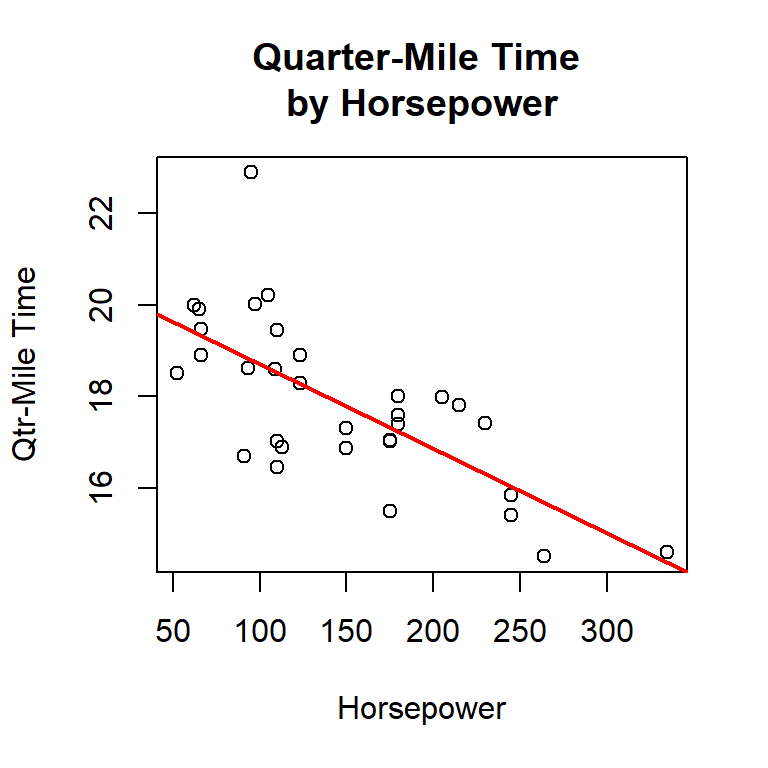

Lab 7 Correlation and Regression
7.1 Introduction
Correlation is a method used to describe a relationship between the independent (or x-axis) and dependent (or y-axis) variables in some research project. For example, imagine a project involving corn production where researchers applied a treatment to 50 acres of corn but not to another 50 acres in a nearby field. At the end of the growing season they found that the untreated field yielded 150 bushels per acre while the treated field yielded 170 bushels per acre. This would indicate a correlation, or relationship, between the treatment applied and the crop yield.
Regression analysis is a statistical method that uses correlation to find trends in data. With regression analysis, it is possible to predict the unknown value of the dependent variable based on a known value of the independent variable. For example, if a researcher recorded the 100 real estate sales in a small town along with the age of the houses being sold then it would be possible to use regression analysis to predict the selling price for a house when given its age. This lab explores both correlation and regression.
7.1.1 Causation
From the outset of this lab, it is important to remember that correlation does not equal causation. If two factors are correlated, even if that correlation is quite high, it does not follow that one is causing the other. As an example, if a research project found that students who spend more hours studying tend to get higher grades this would be an interesting correlation. However, that research, by itself, could not prove that longer studying hours causes higher grades. There would be other intervening factors that are not accounted for in this simple correlation (like the type of final examination used). As an egregious example of this point, consider that the mean age in the United States is rising (that is, people are living longer; thus, there are more elderly people) and that the crime of human trafficking is increasing. While these two facts may be correlated, it would not follow that old people are responsible for human trafficking! Instead, there are numerous social forces in play that are not accounted for in this simple correlation. It is important to keep in mind that correlation does not equal causation.
7.1.2 Definition
A correlation is a number between -1.0 and +1.0, where 0.0 means there is no correlation between the two variables and either +1.0 or -1.0 means there is a perfect correlation. A positive correlation means that as one variable increases the other also increases. For example, as people age they tend to weigh more so a positive correlation would be expected between age and weight. A negative correlation, on the other hand, means that as one variable increases the other decreases. For example, as people age they tend to run slower so a negative correlation would be expected between age and running speed. Here are the verbal definitions that are commonly accepted for a correlation’s value.
| Correlation | Description |
|---|---|
| +.70 or higher | Very strong positive |
| +.40 to +.69 | Strong positive |
| +.30 to +.39 | Moderate positive |
| +.20 to +.29 | Weak positive |
| +.19 to -.19 | No or negligible |
| -.20 to -.29 | Weak negative |
| -.30 to -.39 | Moderate negative |
| -.40 to -.69 | Strong negative |
| -.70 or less | Very strong negative |
7.2 Pearson’s r
Pearson’s Product-Moment Correlation Coefficient (normally called Pearson’s r) is a measure of the strength of the relationship between two variables having continuous data that are normally distributed (they have bell-shaped curves). (Note: The Introduction to R tutorial contains information about various data types. The following examples of correlation using Pearson’s r are from the mtcars dataset.
| Variables | Correlation | Description |
|---|---|---|
| disp-mpg | -0.8476 | Very Strong Negative |
| wt-mpg | -0.8677 | Very Strong Negative |
| wt-qsec | -0.1747 | No Correlation |
| disp-qsec | -0.4337 | Strong Negative |
| drat-qsec | +0.0912 | No Correlation |
7.2.1 Demonstration: Pearson’s r
The following script demonstrates how to calculate Pearson’s r.
- Line 2: This is the start of the
cor.testfunction, which calculates the correlation between two variables. That function requires the x-axis variable be listed first then the y-axis variable. - Line 3: This is a continuation of the
cor.testfunction call and specifies the method to be Pearson’s r. Since Pearson’s r is the default method for thecor.testfunction this line did not need to be included but it is used in this example since the specification will be important in later examples in this lab.
The cor.test function returns a lot of information that will be important in later tutorials; however, here is an explanation for the result of this function.
- Pearson’s product-moment correlation: This is the title of the function being executed.
- data: …: This lists the two variables being correlated.
- t=…: This line is the result of the calculation.
- The “t” score is used to calculate the p-value at the end of the line.
- The “df” are the “degrees of freedom” and is a measure of how many different levels the variables can take.
- The “p-value” is the probability value and, normally, a p-value less than 0.05 is considered significant. (Significance and p-value are discussed later in this tutorial.)
- alternative…: The alternative hypothesis being tested. The default is that the correlation is not equal to zero and this line simply states the alternative hypothesis so the researcher can compare that hypothesis with the correlation and p-value to see if the null hypothesis can be rejected. (“Hypothesis” is discussed in the Parametric Hypothesis Testing tutorial.)
- 95 percent…: This shows the 95% confidence level for the true correlation. In this case, the true correlation should be between -0.706 and -0.471.
- sample estimates: This begins the “estimates” section of the report.
- cor: This verifies that the test executed was Pearson’s r (Spearman’s will report rho and Kendall’s will report tau).
- -0.6015465: This is the calculated correlation between the two variables.
7.2.2 Guided Practice: Pearson’s r
Using the CO2 data frame, calculate Pearson’s r for the variables conc and uptake.
7.2.3 Activity: Pearson’s r
Using the cafe data frame, determine the correlation between the length of the meal and the bill to see if longer meals tend to cost more. Because these are both ratio variables, use Pearson’s r as the correlation method. Record the correlation in the deliverable document for this lab.
7.3 Categorical Data
When the one or both data elements are categorical then Spearman’s rho or Kendall’s tau is used to calculate the correlation. Other than the process used, the concept is exactly the same as for Pearson’s r and the result is a correlation between -1.0 and +1.0 where the strength and direction of the correlation is determined by its value. Spearman’s rho is used when at least one variable is ordered data and typically involves larger data samples while Kendall’s tau can be used for any type of categorical data but is more accurate for smaller data samples. (Note: “ordered data” have categories that imply some sort of order but the difference between the categories cannot be calculated. As an example, if some people strongly agree with a statement and others strongly disagree there is an obvious difference in those opinions but it would be impossible to arithmetically calculate that difference.)
For example, imagine a research project that is attempting to determine movie preference by a person’s age. The researcher could ask a large group of people to indicate their age and how well they liked certain types of movies by giving each a “star” rating. Clearly, types that are rated five-star are somehow better than those rated four-star, but it is not possible to quantify that difference in any sort of meaningful way. Spearman’s rho would be used to calculate a correlation between age and movie rating. If that correlation came out to -0.632 (this is a made-up number) for “horror” movies then the researcher could conclude that there is a negative relationship between age and preference for horror movies. That is, as people age they tend to not prefer horror movies.
On the other hand, imagine that a dataset included information about the age of people who purchased various makes of automobiles. If the “makes” are selected from a list (Ford, Chevrolet, Honda, etc.) then the data are categorical but no order is implied (that is, “Ford” is neither better or worse than “Chevrolet”) so Kendall’s tau would be used to calculate the correlation between the customers’ preference for the make of an automobile and their ages. Perhaps the correlation would come out to +0.534 (this is a made-up number). This would indicate that there was a strong positive correlation between these two variables; that is, people tend to prefer a specific make based upon their age; or, to put it another way, as people age their preference for automobile make changes in a predictable way.
The following examples are from the mtcars dataset and since they all involve ordered data Spearman’s rho was used to calculate the correlations.
| Variables | Correlation | Description |
|---|---|---|
| cyl—gear | -0.5643 | Strong Negative |
| gear—am | +0.8077 | Very Strong Positive |
| cyl—carb | +0.5801 | Strong Positive |
| carb—gear | +0.1149 | No Correlation |
| vs—carb | -0.6337 | Strong Negative |
7.3.1 Demonstration: Spearman’s rho
The following script demonstrates using cor.test to calculate correlations from the esoph data frame using Spearman’s rho. The process for this calculation is the same as for Pearson’s r except the method specified is “spearman”. There is one other difference between this script and the first. Notice on line 2 that esoph$agegp is inside an as.numeric function. Since agegp uses text like “25-34” instead of a number this converts that to a number for Spearman’s rho. (Note: This script will generate a warnings about p-values but that can be safely ignored for this tutorial.)
The interpretation of the results of Spearman’s rho is similar to that for Pearson’s r and will not be further explained here.
7.3.2 Guided Practice: Spearman’s rho
Using the CO2 data frame, calculate Spearmans’s rho for the variables Plant (which is ordered) and uptake.
7.3.3 Activity: Spearman’s rho
Using the cafe data frame, determine the correlation between age and service (svc) to see if there is a relationship between a customer’s age and their rating for the service. Because service contains ordered data, use Spearman’s rho as the correlation method. Record the correlation in the deliverable document for this lab.
7.3.4 Demonstration: Kendall’s tau
The following script demonstrates using cor.test to calculate correlations from the npk data frame using Kendall’s tau. The process for this calculation is the same as for Pearson’s r except the method specified is “kendall”. As in the Spearman example, the first variable must be converted to numeric values. Also, this function will generate a warning but that can be ignored for this lab.
Interpreting Kendall’s tau is similar to Pearson’s r and will not be further discussed here.
7.3.5 Guided Practice: Kendall’s tau
Using the CO2 data frame, calculate Kendall’s tau for the variables Type and uptake.
7.3.6 Activity: Kendall’s tau
Using the cafe data frame, determine the correlation between the meal eaten and distance driven (miles). Because meal is categorical but not ordered, use Kendall’s tau as the correlation method. Record the correlation in the deliverable document for this lab.
7.4 Selecting a Correlation Test
Pearson’s r, Spearman’s rho, and Kendall’s tau all calculate correlation and it is reasonable to wonder which method should be used in any given situation. Here is a quick chart to help.
| Correlation | Data |
|---|---|
| Pearson’s r | both data items being correlated are continuous. |
| Spearman’s rho | at least one variable is ordered and the sample size is large. |
| Kendall’s tau | at least one variable is categorical (but not necessarily ordered) and the sample size is small. |
Imagine a survey where college students were asked to check a box for their class (freshman-sophomore-etc.) and enter their age in years. Spearman’s rho would be used to correlate these two data items since the class is ordered (“senior” comes after “junior”) and age is continuous.
7.5 Significance
Most people use the word significant to mean important but researchers and statisticians have a much different meaning for the word significant and it is vital to keep that difference in mind.
In statistics and research, significance means that the experimental results were such that they would not likely have been produced by mere chance. For example, if a coin is flipped 100 times, heads should come up 50 times. Of course, by pure chance, it would be possible for heads to come up 55 or even 60 times. However, if heads came up 100 times, researchers would suspect that something unusual was happening (and they would be right!). To a researcher, the central question of significance is “How many times can heads come up and still be considered just pure chance?”
In general, researchers use one of three significance levels: 1%, 5%, or 10%. A researcher conducting The Great Coin-Tossing Experiment may start by simply stating “This result will be significant at the 5% level.” That would mean that if the coin were tossed 100 times, then anything between 47.5-52.5 (a 5% spread) “heads” tosses would be considered merely chance. However, 47 or 53 “heads” would be outside that 5% spread and would be significant.
It must seem somewhat subjective for a researcher to simply select the desired significance level, but an overwhelming number researchers in business and the social and behavioral sciences (like education, sociology, and psychology) tend to choose a significance level of 5%. There is no real reason for choosing a 5% level other than it is just the way things have traditionally been done for many years. Therefore, if a researcher selected something other than 5%, peer researchers would want some explanation concerning the “weird” significance level.
The calculated significance is typically reported as a p-value (for “probability value”). The following table contains the correlation and p-value for several pairs of variables from the mtcars data frame.
| Variables | Correlation | Pvalue |
|---|---|---|
| wt—qsec | -0.1747 | 0.3389 |
| am—hp | -0.2432 | 0.1798 |
| hp—drat | -0.4488 | 0.009989 |
| cyl—vs | -0.8108 | 1.843 x 10-08 |
| wt—disp | +0.8880 | 1.222 x 10-11 |
If a 5% significance level were specified for this data then any p-value smaller than 0.05 is considered significant; that is, the observed relationship is not likely due to chance. Given that, there is no significance in the correlation between wt—qsec and between am—hp since the p-values for those correlations are greater than 0.05. However, the correlations between the other variables are significant since the p-values for those are smaller than 0.05.
7.5.1 Demonstration: Significance
One of the statistics calculated by cor.test is the p-value, so that test can be used to find significance along with a correlation. The following script demonstrates using cor.test to find the significance in the correlation between Wind and Temp in the airquality data frame.
At the end of line two of the results (not counting the title line), the p-value is reported at 2.642e-09, which is how R reports 2.642 × 10-09, and that is far smaller than 0.05. This correlation, then, would be considered statistically significant.
7.5.2 Guided Practice: Significance
Using the CO2 data frame, calculate the p-value for the correlation between conc and uptake. Since these are both continuous data, pearson should be selected for the method.
7.5.3 Activity: Significance
Using the cafe data frame, calculate the p-value for the correlation between age and bill. Since these are both continuous data, pearson should be selected for the method. Record the p-value in the deliverable document for this lab.
7.6 Prediction by Regression
A regression line can be drawn on a scatter plot to graphically show the relationship between two variables (this is sometimes called a “trend line” and a “line of best fit”). Moreover, if the data points in the scatter plot are all close to the regression line, then it indicates a strong correlation.
As an example, in the mtcars dataset the calculated Pearson’s r for Quarter-mile Time and Horsepower is -0.708. These two variables have a strong negative correlation and are plotted below.

While regression analysis can have many uses, one of the simplest and most common is to make y-axis predictions for new x-axis values. Using r’s linear model function (lm), the line drawn in the above figure was determined to have a slope of -0.01846 and a y-intercept of 20.55635. Using this information and the slope intercept equation, \(y = mx + b\), the quarter-mile time (y-axis) for a new horsepower (x-axis) can be predicted. For example, the following predicts the quarter-mile time for a horsepower of 200.
\[ \begin{aligned} y &= mx + b \\ y &= (-0.01846 * 200) + 20.55635 \\ y &= -3.692 + 20.55635 \\ y &= 16.86435 \end{aligned} \]
In the equation, m is the slope of the regression line and b is the y-intercept. By plugging in the new value for x, a simple calculation will determine the predicted value for y, which is 16.86 (rounded).
Regression analysis becomes less certain if the supplied x value is at the edge or outside the main body of the scatter plot. For example, using the above figure, it is mathematically possible to predict the quarter-mile time (y-axis) for a horsepower of 50.
\[ \begin{aligned} y &= mx + b \\ y &= (-0.01846 * 50) + 20.55635 \\ y &= -0.923 + 20.55635 \\ y &= 19.63 \end{aligned} \]
However, since the selected x value is at the very edge of the main body of the scatter plot then the calculated y value is suspect and should not be reported.
7.6.1 Demonstration: Prediction by Regression
The following r script uses the lm function to find the values of \(m\) and \(b\) for a correlation between two variables. Then, it calculates a predicted value for y when given an x value.
- Line 3: The slope-intercept equation is noted in a comment on line 3.
- Line 5: This line executes the
lmfunction to generate a “linear model” (the line of best fit) for horsepower (x-axis) and quarter-mile time (y-axis) in the mtcars data frame. The result of this function is stored in a variable named lmod. It is important to ensure that the variables are entered in the correct order or the linear model will be backwards. The dependent variable (the y-axis) is listed first and then the independent variable (the x-axis). Thus, it is expected that the quarter-mile time is dependent on the horsepower of the car, not the other way around. - Lines 6-7: Each of these lines store one number in a variable for use in Line 13. There is an odd format used to extract each of these numbers.
lmodcontains a lot of information, including dozens of numbers, and Line 6 (the slope) accesses thecoefsection oflmodand extracts just the slope and then stores it in a variable named b. Line 7 accesses thecoefsection oflmodand extracts just the intercept and stores it in a variable named m. - Line 10: The new value of horsepower is stored in a variable named x. In this case, the quarter-mile time for a car with 250 horsepower is being predicted
- Line 13: This is the slope-intercept equation written in R format and it is executed with the variables stored in Lines 6, 7, and 10.
7.6.2 Guided Practice: Prediction by Regression
Using the airquality data frame, predict the Wind (y-axis) when the Temp (x-axis) is 80 degrees.
7.6.3 Activity: Prediction by Regression
Using the cafe data frame, predict the tip from a customer who is 48 years old. Round the tip to the nearest penny. Record the prediction in the deliverable document for this lab.
7.7 Deliverable
Complete the activities in this lab and consolidate the responses into a single document. Name the document with your name and “Lab 7,” like “George Self Lab 7” and submit that document for grade.